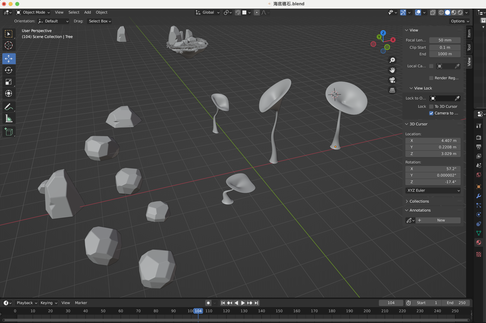
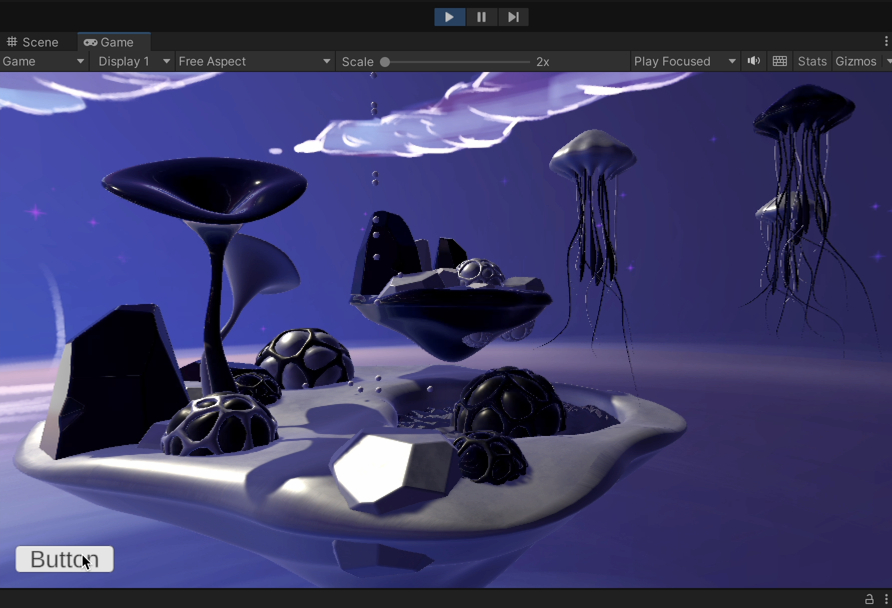
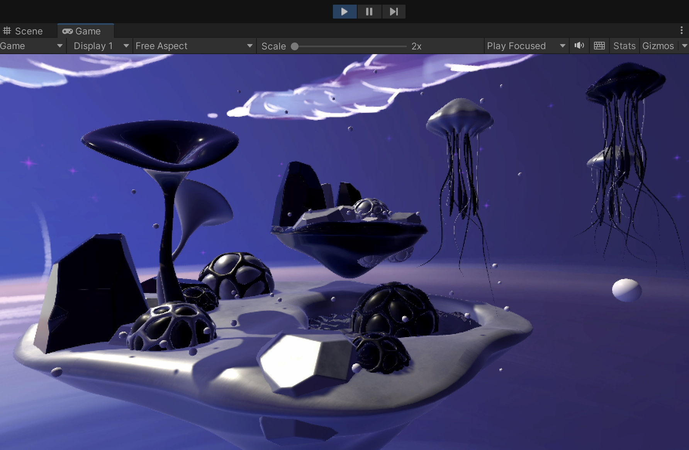

Underwater Starry Sky Under Snow Fall
Inspiration:
Keywords: Religion, Strange, Sky, Island, Bio
Ref:

Dream Space final scene design concept:
I hope this is a world that can break through spatial limitations, where marine life grows on land and floats in the air. Jellyfish can not only "fly" in water but also in the air. The exposed "underwater world" floats quietly under a snowy starry sky, silently appreciating strange yet ordinary moments.
Dream Space interaction design concept:
Use the spacebar to control the random falling of "snow." Watching the quietly floating "ocean island," it is sometimes hard to distinguish whether it is at the bottom of the sea or in the night sky. What can be distinguished is that snowflakes melt when they fall into the water, but when the user uses the spacebar to control the falling snowflakes, the snowflakes formed by water condensation truly collide with the underwater creatures. This forms a scene composed of elements from reality, yet it is impossible to appear in reality.
Design process:
1. In Blender, select representative elements of the ocean and complete the modeling of the "ocean island."

2. Import the models from Blender into Unity for interaction design.

3. Define the interaction form of "snow falling" and write the script. Based on the script learned in class (clicking a button repeatedly creates objects), the goal is to further achieve multiple falling snow. However, the "drop" script cannot select object groups, and one click can only drop one characteristic object.

4. Change the approach, search online for a script that allows objects to fall randomly. At the same time, for the sake of screen integrity, change the interaction from clicking a "Button" in the UI interface to using the spacebar to control the random falling of snow, thus completing the interaction.
